Case study at a glance
- Problem
- Turn web content into structured, reusable datasets.
- Approach
- Used Python, Selenium, Playwright and BeautifulSoup for collection and processing.
- Implementation
- Tools and techniques: Python, Playwright, Selenium, BeautifulSoup, Requests.
- Outcome
- CSV/Excel exports and documented automation workflows.
VnExpress News
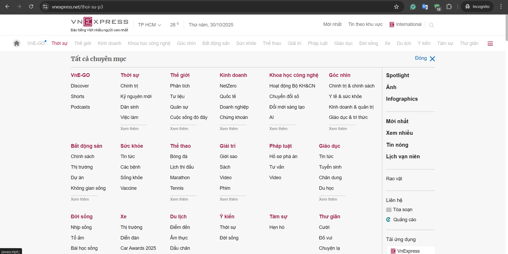
View full size ↗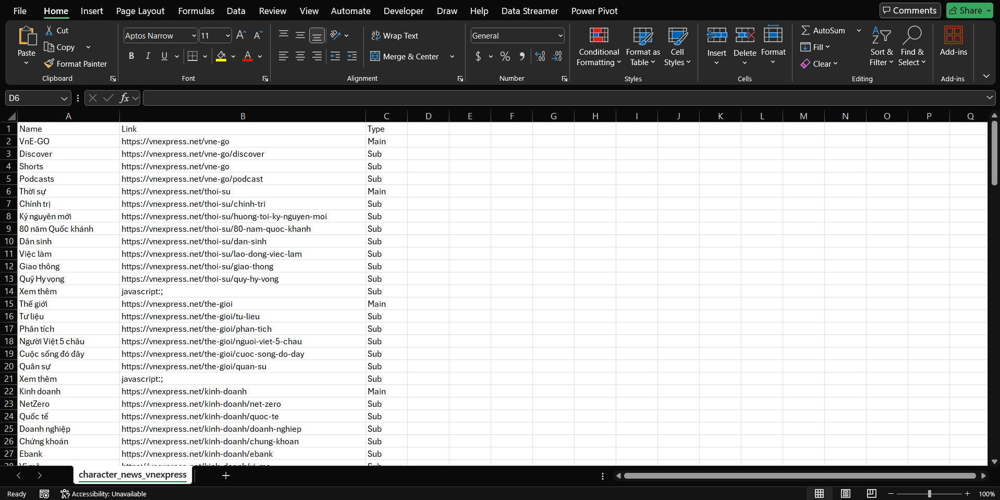
View full size ↗Code Snippet:
from selenium import webdriver
from bs4 import BeautifulSoup
import pandas as pd
import time
url = "https://vnexpress.net/"
# Cấu hình Chrome options
options = webdriver.ChromeOptions()
options.add_argument("--disable-gpu")
options.add_argument("--window-size=700,800")
options.add_argument("user-agent=Mozilla/5.0 (Windows NT 10.0; Win64; x64) AppleWebKit/537.36")
driver = webdriver.Chrome(options=options)
driver.get(url)
time.sleep(3)
html = driver.page_source
driver.quit()
# Parse HTML với BeautifulSoup
soup = BeautifulSoup(html, 'lxml')
character_news = soup.find('div', class_='row-menu')
data = []
if character_news:
cat_menus = character_news.find_all('ul', class_='cat-menu')
for menu in cat_menus:
first_li = menu.find('li')
if first_li:
main_link = first_li.find('a')
if main_link:
main_name = main_link.get_text(strip=True)
main_href = main_link.get('href', '')
data.append({"Name": main_name, "Link": main_href, "Type": "Main"})
# Các mục con
for li in menu.find_all('li')[1:]:
sub_link = li.find('a')
if sub_link:
sub_name = sub_link.get_text(strip=True)
sub_href = sub_link.get('href', '')
data.append({"Name": sub_name, "Link": sub_href, "Type": "Sub"})
# Lưu dữ liệu ra CSV
df = pd.DataFrame(data)
df.to_csv("character_news_vnexpress.csv", index=False, encoding='utf-8-sig')VnExpress Scores
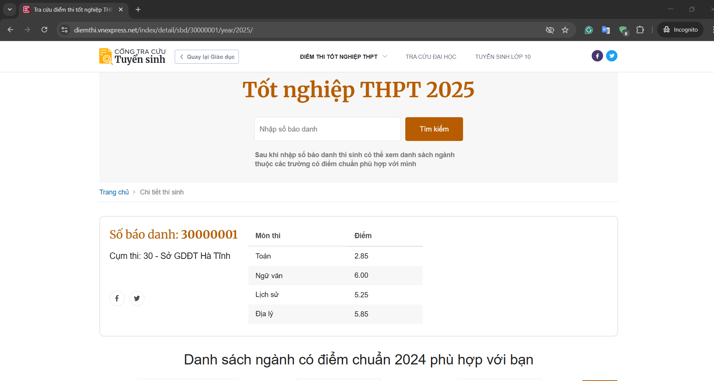
View full size ↗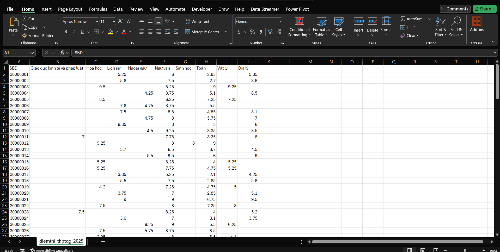
View full size ↗Code Snippet:
import requests
import requests
from bs4 import BeautifulSoup
import csv
import time
import random
import os
START_SBD = 30000001
END_SBD = 39999999
YEAR = 2025
MAX_ERRORS = 3
OUTPUT_FILE = 'diemthi_thptqg_2025.csv'
headers = {
'User-Agent': 'Mozilla/5.0 (Windows NT 10.0; Win64; x64) AppleWebKit/537.36 (KHTML, like Gecko) Chrome/120.0.0.0 Safari/537.36',
'Accept-Language': 'vi-VN,vi;q=0.9,en-US;q=0.8,en;q=0.7',
}
all_subjects = set()
rows = []
error_count = 0
def get_student_data(sbd):
url = f"https://diemthi.vnexpress.net/index/detail/sbd/{sbd}/year/{YEAR}"
print(f"Lấy SBD: {sbd}")
try:
resp = requests.get(url, headers=headers, timeout=10)
if resp.status_code != 200:
return None
soup = BeautifulSoup(resp.text, 'html.parser')
info = soup.find('div', class_='o-detail-thisinh__info')
diemthi = soup.find('div', class_='o-detail-thisinh__diemthi')
if not info or not diemthi:
return None
sbd_tag = info.find('h2', class_='o-detail-thisinh__sbd')
sbd_val = sbd_tag.find('strong').text.strip() if sbd_tag else str(sbd)
table = diemthi.find('table', class_='e-table')
if not table:
return None
tbody = table.find('tbody')
subjects = {}
for tr in tbody.find_all('tr'):
tds = tr.find_all('td')
if len(tds) == 2:
mon = tds[0].text.strip()
diem = tds[1].text.strip()
subjects[mon] = diem
return {
'SBD': sbd_val,
'Subjects': subjects
}
except Exception:
return None
def write_csv(rows, all_subjects):
fieldnames = ['SBD'] + sorted(all_subjects)
with open(OUTPUT_FILE, 'w', newline='', encoding='utf-8-sig') as f:
writer = csv.DictWriter(f, fieldnames=fieldnames)
writer.writeheader()
for row in rows:
for mon in all_subjects:
if mon not in row:
row[mon] = ''
writer.writerow(row)
def append_csv(row, all_subjects, write_header=False):
fieldnames = ['SBD'] + sorted(all_subjects)
with open(OUTPUT_FILE, 'a', newline='', encoding='utf-8-sig') as f:
writer = csv.DictWriter(f, fieldnames=fieldnames)
if write_header:
writer.writeheader()
for mon in all_subjects:
if mon not in row:
row[mon] = ''
writer.writerow(row)
# File exist or not
file_exists = os.path.exists(OUTPUT_FILE)
for sbd in range(START_SBD, END_SBD + 1):
data = get_student_data(sbd)
if data is None:
error_count += 1
if error_count >= MAX_ERRORS:
print(f"Dừng lại ở SBD {sbd} do gặp {MAX_ERRORS} lần lỗi liên tiếp.")
break
else:
error_count = 0
new_subjects = set(data['Subjects'].keys()) - all_subjects
all_subjects.update(data['Subjects'].keys())
row = {'SBD': data['SBD']}
row.update(data['Subjects'])
rows.append(row)
# If new subjects found, update the entire CSV file with new header
if new_subjects and len(rows) > 1:
print(f"Phát hiện môn mới: {new_subjects}. Đang cập nhật lại file CSV...")
write_csv(rows, all_subjects)
else:
# If no new subjects found, append the row to the existing CSV
append_csv(row, all_subjects, write_header=(not file_exists and len(rows) == 1))
file_exists = True
time.sleep(random.uniform(0.2, 0.7))Pinterest Downloader (Playwright)
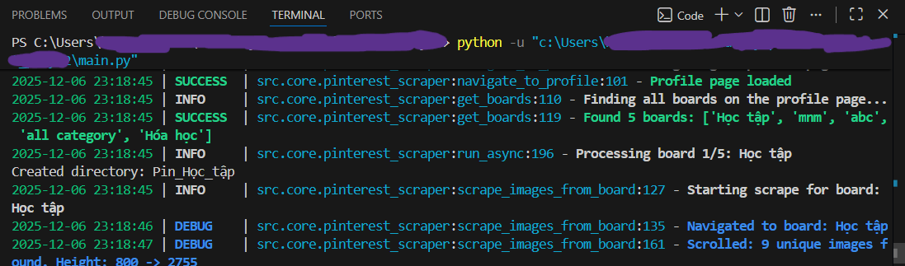
View full size ↗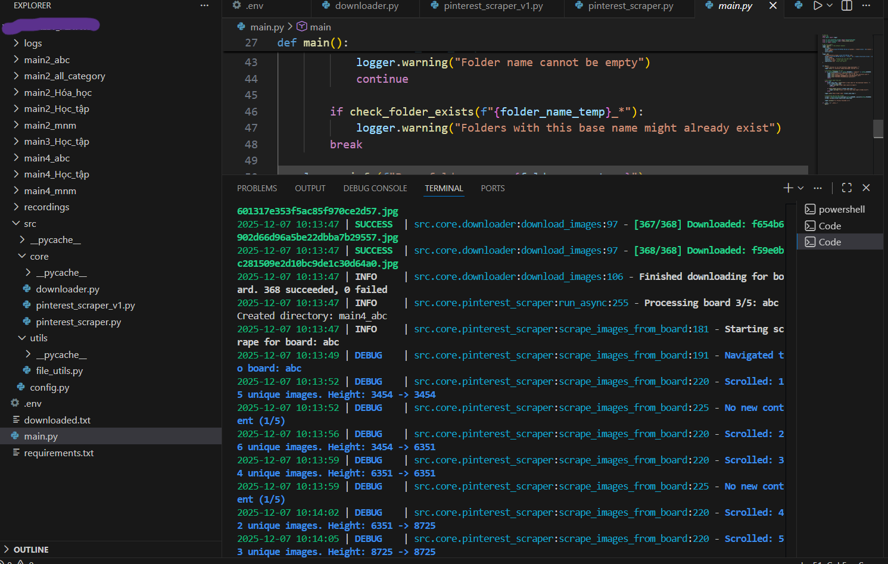
View full size ↗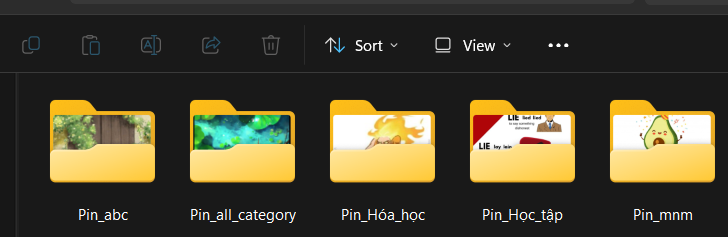
View full size ↗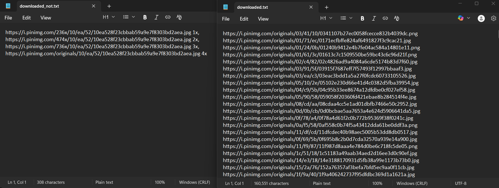
View full size ↗Code Snippet:
import sys
from loguru import logger
from src.core.pinterest_scraper import PinterestScraper
from src.utils.file_utils import check_folder_exists
from src import config
# Cấu hình Loguru với màu sắc và file rotation
logger.remove()
logger.add(
sys.stderr,
format="{time:YYYY-MM-DD HH:mm:ss} | {level: <8} | {name}:{function}:{line} - {message}",
level="DEBUG",
colorize=True
)
logger.add(
"logs/pinterest_scraper_{time:YYYY-MM-DD}.log",
rotation="10 MB",
retention="7 days",
compression="zip"
)
def main():
"""Main function to run the Pinterest image downloader."""
logger.info("=== Pinterest Image Downloader Started ===")
# Validate credentials
if not config.USERNAME or not config.PASSWORD or "default" in config.USERNAME:
logger.error("Pinterest credentials are not set!")
return
# Get folder name from user
folder_name_temp = input("Enter a base name for the download folders: ")
# Initialize and run the scraper
scraper = PinterestScraper(username=config.USERNAME, password=config.PASSWORD)
scraper.run(base_folder_name=folder_name_temp)
logger.success("=== Process Finished ===")Code Snippet:
import asyncio
from playwright.async_api import async_playwright, TimeoutError as PlaywrightTimeoutError
from loguru import logger
from src import config
from src.core.downloader import ImageDownloader
class PinterestScraper:
def __init__(self, username: str, password: str):
self.username = username
self.password = password
self.downloader = ImageDownloader()
async def _setup_browser(self):
"""Khởi tạo Playwright browser với video recording."""
self.playwright = await async_playwright().start()
self.browser = await self.playwright.chromium.launch(
headless=config.HEADLESS,
slow_mo=config.SLOW_MO,
args=['--disable-notifications', '--no-sandbox']
)
context_options = {
'viewport': {'width': config.VIEWPORT_WIDTH, 'height': config.VIEWPORT_HEIGHT},
'user_agent': config.USER_AGENT,
'locale': 'en-US'
}
# Video recording nếu được bật
if config.RECORD_VIDEO:
context_options['record_video_dir'] = config.VIDEO_DIR
context_options['record_video_size'] = config.VIDEO_SIZE
self.context = await self.browser.new_context(**context_options)
self.context.set_default_timeout(config.ACTION_TIMEOUT_MS)
self.page = await self.context.new_page()
async def login(self):
"""Đăng nhập Pinterest với Playwright auto-wait."""
await self.page.goto(config.BASE_URL, wait_until='domcontentloaded')
await self.page.click(config.LOGIN_BUTTON_SELECTOR)
await self.page.fill(config.EMAIL_INPUT_SELECTOR, self.username)
await self.page.fill(config.PASSWORD_INPUT_SELECTOR, self.password)
await self.page.press(config.PASSWORD_INPUT_SELECTOR, 'Enter')
await self.page.wait_for_selector(config.AVATAR_SELECTOR, state='visible')
logger.success("Login successful")Code Snippet:
import os
import requests
from concurrent.futures import ThreadPoolExecutor, as_completed
from loguru import logger
class ImageDownloader:
"""Handles downloading images với parallel processing."""
def __init__(self, max_workers: int = 5):
self.max_workers = max_workers
def _download_single_image(self, url: str, folder_name: str) -> tuple:
"""Download một image từ URL sử dụng requests."""
try:
highest_res_url = url.split(',')[-1].replace(' 4x', '').strip()
filename = highest_res_url.split('/')[-1].split('?')[0]
filepath = os.path.join(folder_name, filename)
if os.path.exists(filepath):
return (highest_res_url, True, "Already exists")
headers = {'User-Agent': config.USER_AGENT}
with requests.get(highest_res_url, stream=True, timeout=15, headers=headers) as r:
r.raise_for_status()
with open(filepath, 'wb') as f:
for chunk in r.iter_content(chunk_size=8192):
f.write(chunk)
return (highest_res_url, True, "")
except Exception as e:
return (url, False, str(e))
def download_images(self, image_urls: list, folder_name: str):
"""Downloads images với parallel processing."""
unique_urls = sorted(list(set(image_urls)))
with ThreadPoolExecutor(max_workers=self.max_workers) as executor:
future_to_url = {
executor.submit(self._download_single_image, url, folder_name): url
for url in unique_urls
}
for future in as_completed(future_to_url):
url, success, error = future.result()
if success:
logger.success(f"Downloaded: {url.split('/')[-1][:50]}")Code Snippet:
import os
from dotenv import load_dotenv
load_dotenv()
# --- Credentials ---
USERNAME = os.getenv("PINTEREST_USERNAME", "default_user@example.com")
PASSWORD = os.getenv("PINTEREST_PASSWORD", "default_password")
# --- Browser Settings ---
USER_AGENT = "Mozilla/5.0 (Windows NT 10.0; Win64; x64) AppleWebKit/537.36"
VIEWPORT_WIDTH = 1200
VIEWPORT_HEIGHT = 800
HEADLESS = False
SLOW_MO = 100
# --- Pinterest Selectors ---
BASE_URL = "https://www.pinterest.com"
LOGIN_BUTTON_SELECTOR = "[data-test-id='simple-login-button']"
EMAIL_INPUT_SELECTOR = "#email"
PASSWORD_INPUT_SELECTOR = "#password"
AVATAR_SELECTOR = "[data-test-id='gestalt-avatar-svg']"
BOARD_TITLE_SELECTOR = "[data-test-id='board-card-title'] h2"
IMAGE_SELECTOR = "img[srcset]"
# --- Video Recording ---
RECORD_VIDEO = True
VIDEO_DIR = "recordings"
VIDEO_SIZE = {"width": 1280, "height": 720}Pinterest Downloader (Selenium)
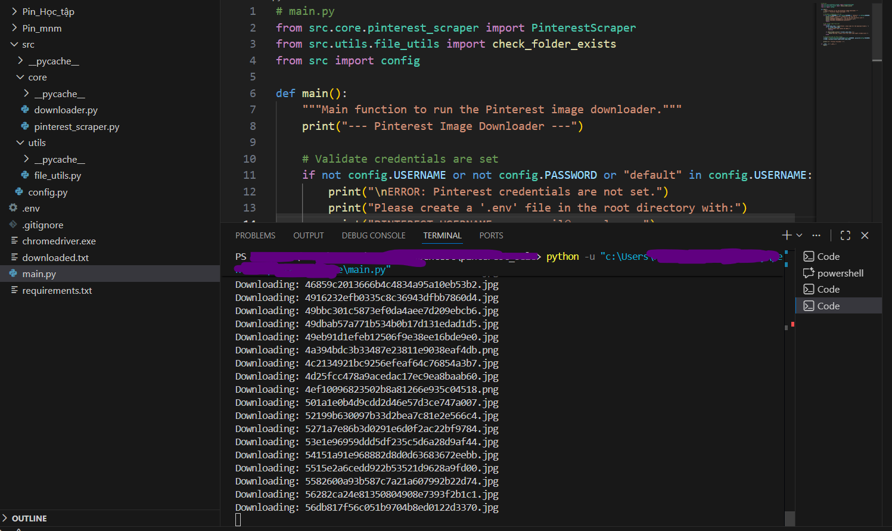
View full size ↗ View full size ↗
View full size ↗ View full size ↗
View full size ↗Code Snippet:
from src.core.pinterest_scraper import PinterestScraper
from src.utils.file_utils import check_folder_exists
from src import config
def main():
"""Main function to run the Pinterest image downloader."""
print("--- Pinterest Image Downloader ---")
# Validate credentials are set
if not config.USERNAME or not config.PASSWORD or "default" in config.USERNAME:
print("\nERROR: Pinterest credentials are not set.")
print("Please create a '.env' file in the root directory with:")
print("PINTEREST_USERNAME=your_email@example.com")
print("PINTEREST_PASSWORD=your_password")
return
# Get folder name from user
while True:
folder_name_temp = input("Enter a base name for the download folders: ")
if not folder_name_temp:
print("Folder name cannot be empty.")
continue
if check_folder_exists(f"{folder_name_temp}_*"):
print("Warning: Folders with this base name might already exist.")
break
# Initialize and run the scraper
scraper = PinterestScraper(username=config.USERNAME, password=config.PASSWORD)
scraper.run(base_folder_name=folder_name_temp)
print("\n--- Process Finished ---")
if __name__ == "__main__":
main()Code Snippet:
from time import sleep
from bs4 import BeautifulSoup
from selenium import webdriver
from selenium.webdriver.chrome.options import Options
from selenium.webdriver.common.by import By
from selenium.webdriver.common.keys import Keys
from selenium.webdriver.support.ui import WebDriverWait
from selenium.webdriver.support import expected_conditions as EC
from src import config
from src.core.downloader import ImageDownloader
class PinterestScraper:
"""A Selenium-based scraper for downloading images from Pinterest boards."""
def __init__(self, username, password):
self.username = username
self.password = password
self.downloader = ImageDownloader()
self.driver = self._setup_driver()
def _setup_driver(self):
"""Initializes and configures the Chrome WebDriver."""
options = Options()
options.add_argument(f"user-agent={config.USER_AGENT}")
options.add_argument(f"window-size={config.WINDOW_SIZE}")
options.add_argument("--disable-notifications")
driver = webdriver.Chrome(options=options)
driver.implicitly_wait(config.IMPLICIT_WAIT_TIME)
return driver
def login(self):
"""Logs into Pinterest."""
print("Navigating to Pinterest and logging in...")
self.driver.get(config.BASE_URL)
wait = WebDriverWait(self.driver, config.EXPLICIT_WAIT_TIMEOUT)
# Click login button
login_button = wait.until(EC.element_to_be_clickable(
(By.CSS_SELECTOR, config.LOGIN_BUTTON_SELECTOR)))
login_button.click()
# Enter credentials
email_field = wait.until(EC.presence_of_element_located(
(By.ID, config.EMAIL_INPUT_ID)))
email_field.send_keys(self.username)
password_field = self.driver.find_element(By.ID, config.PASSWORD_INPUT_ID)
password_field.send_keys(self.password)
password_field.send_keys(Keys.RETURN)
# Wait for login to complete
wait.until(EC.element_to_be_clickable(
(By.CSS_SELECTOR, config.AVATAR_SELECTOR)))
print("Login successful.")Code Snippet:
def scrape_images_from_board(self, board_name):
"""Navigates to a board and scrapes all image URLs with infinite scroll."""
print(f"\n--- Starting scrape for board: {board_name} ---")
image_urls = []
# Navigate to the board
board_link = self.driver.find_element(By.XPATH, f"//h2[text()='{board_name}']")
board_link.click()
sleep(random.uniform(*config.MEDIUM_WAIT))
# Scroll down to load all images
scroll_pause_time = 2
no_change_count = 0
max_no_change = 5 # Stop after 5 consecutive scrolls with no new height
while True:
last_height = self.driver.execute_script("return document.body.scrollHeight")
# Scroll down 1000px
self.driver.execute_script("window.scrollBy(0, 1000);")
sleep(scroll_pause_time + random.uniform(0.5, 1.5))
# Collect images from current page state
soup = BeautifulSoup(self.driver.page_source, 'html.parser')
images = soup.select(config.IMAGE_SELECTOR)
for image in images:
if image.get('srcset'):
image_urls.append(image['srcset'])
new_height = self.driver.execute_script("return document.body.scrollHeight")
print(f"Scrolled: {len(set(image_urls))} unique images found.")
if new_height == last_height:
no_change_count += 1
if no_change_count >= max_no_change:
print("Reached the end of the page.")
break
else:
no_change_count = 0
return list(set(image_urls))Code Snippet:
import urllib.request
from src.utils.file_utils import log_urls
from src.config import DOWNLOADED_LOG, NOT_DOWNLOADED_LOG
import os
class ImageDownloader:
"""Handles downloading images and logging results."""
def download_images(self, image_urls, folder_name):
"""Downloads images from a list of URLs into a specified folder."""
downloaded_urls = []
not_downloaded_urls = []
unique_urls = sorted(list(set(image_urls)))
print(f"\nFound {len(unique_urls)} unique images to download.")
for url in unique_urls:
try:
# The last URL in srcset is the highest resolution (4x)
highest_res_url = url.split(',')[-1].replace(' 4x', '').strip()
filename = highest_res_url.split('/')[-1].split('?')[0]
print(f"Downloading: {filename}")
urllib.request.urlretrieve(
highest_res_url,
os.path.join(folder_name, filename)
)
downloaded_urls.append(highest_res_url)
except Exception as e:
print(f"Error downloading: {e}")
not_downloaded_urls.append(highest_res_url)
# Log results
log_urls(DOWNLOADED_LOG, downloaded_urls)
log_urls(NOT_DOWNLOADED_LOG, not_downloaded_urls)
print(f"Finished: {len(downloaded_urls)} succeeded, {len(not_downloaded_urls)} failed.")Code Snippet:
import os
from dotenv import load_dotenv
load_dotenv()
# --- Credentials ---
USERNAME = os.getenv("PINTEREST_USERNAME", "default_user@example.com")
PASSWORD = os.getenv("PINTEREST_PASSWORD", "default_password")
# --- WebDriver Settings ---
USER_AGENT = "Mozilla/5.0 (Windows NT 10.0; Win64; x64) AppleWebKit/537.36"
WINDOW_SIZE = "1200,800"
# --- Pinterest Selectors ---
BASE_URL = "https://www.pinterest.com"
LOGIN_BUTTON_SELECTOR = "div[data-test-id='simple-login-button']"
EMAIL_INPUT_ID = "email"
PASSWORD_INPUT_ID = "password"
AVATAR_SELECTOR = "div[data-test-id='gestalt-avatar-svg']"
BOARD_TITLE_SELECTOR = "div[data-test-id='board-card-title'] h2"
IMAGE_SELECTOR = "img[srcset]"
# --- Timing ---
SHORT_WAIT = (2, 4)
MEDIUM_WAIT = (3, 5)
IMPLICIT_WAIT_TIME = 10
EXPLICIT_WAIT_TIMEOUT = 20ITviec Scraper
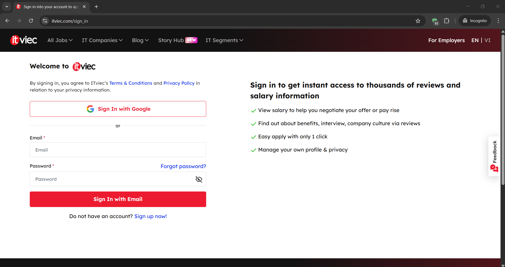
View full size ↗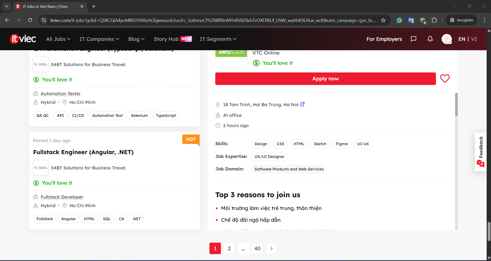
View full size ↗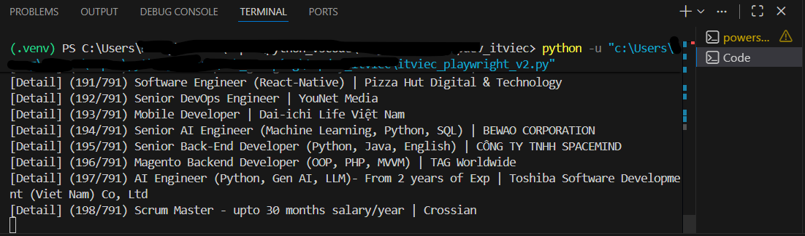
View full size ↗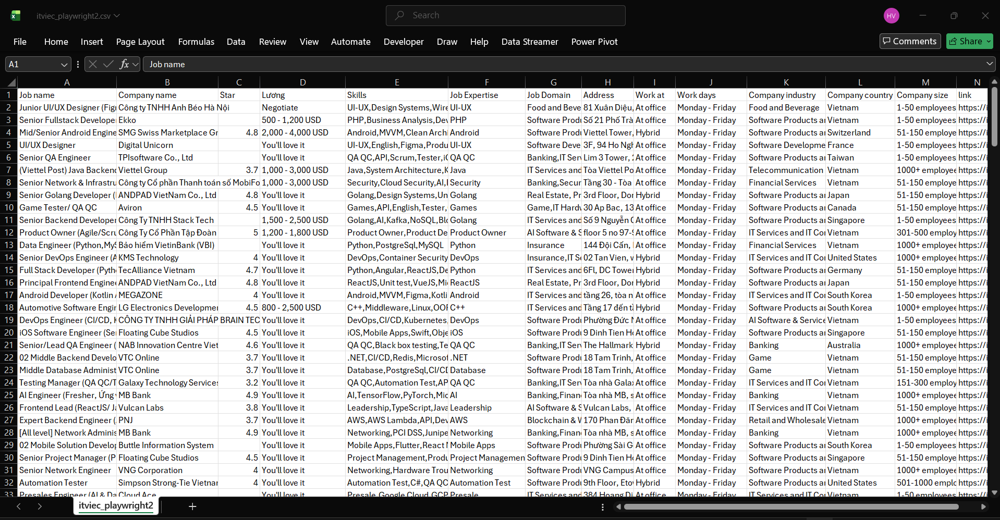
View full size ↗# No code found
TopDev Scraper
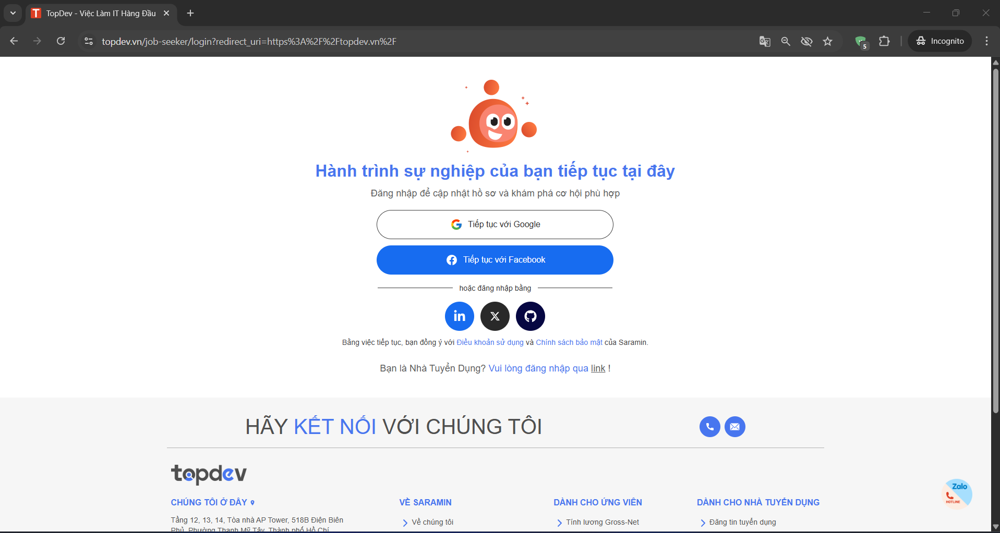
View full size ↗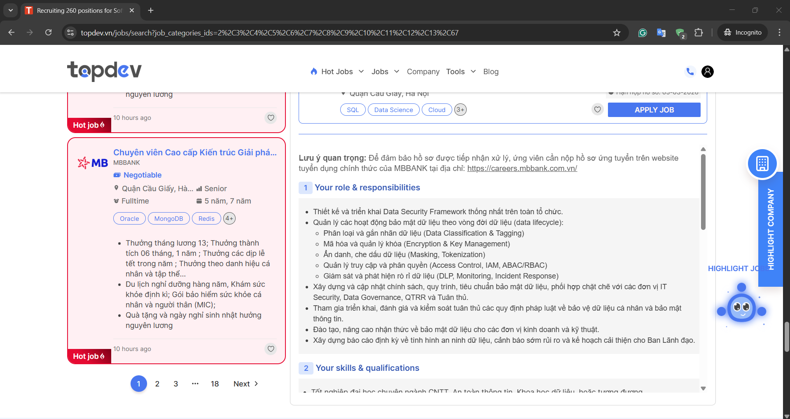
View full size ↗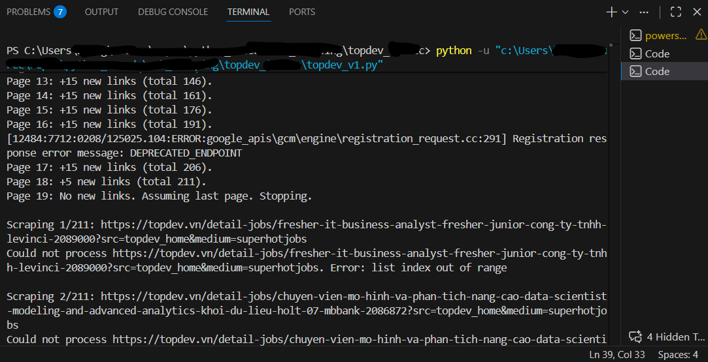
View full size ↗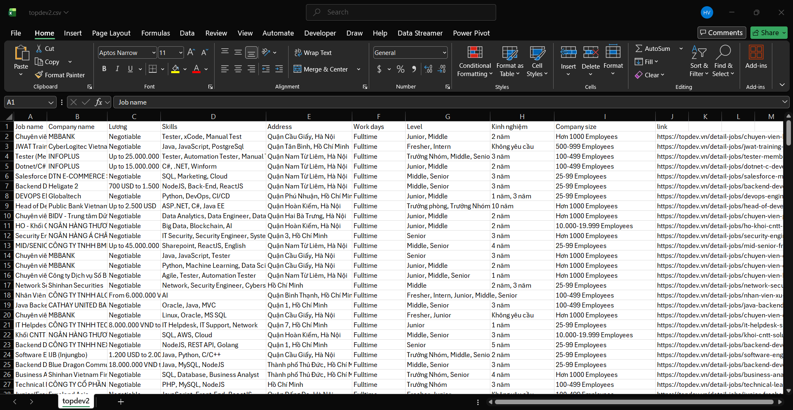
View full size ↗# No code found
Wiki Table Scraper
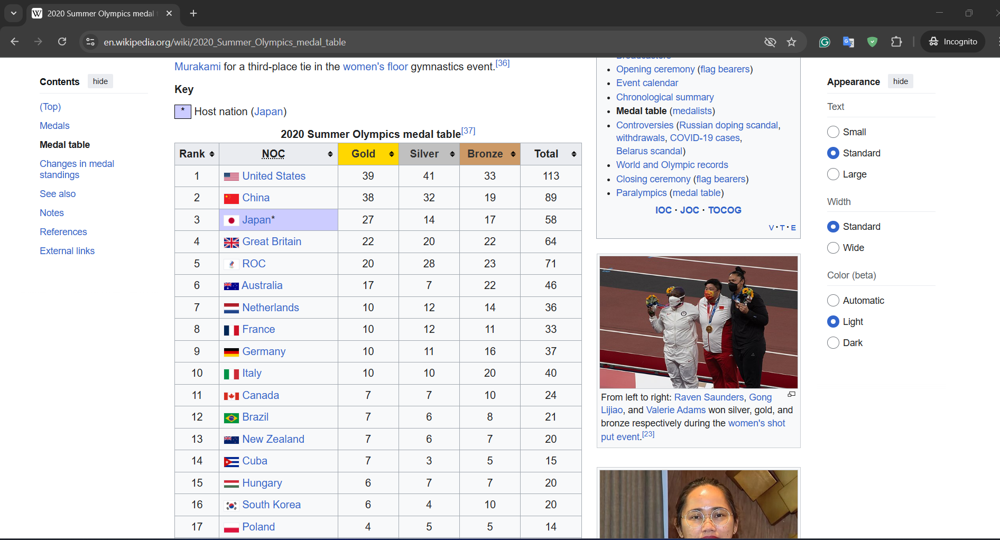
View full size ↗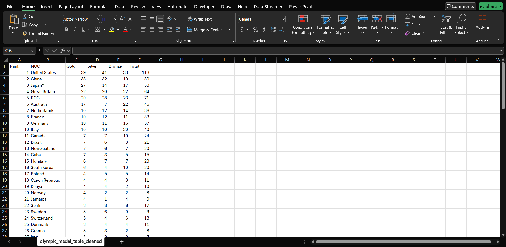
View full size ↗Code Snippet:
import requests
from bs4 import BeautifulSoup
import csv
url = 'https://en.wikipedia.org/wiki/2020_Summer_Olympics_medal_table'
useragent = "Mozilla/5.0 (Windows NT 10.0; Win64; x64) AppleWebKit/537.36 (KHTML, like Gecko) Chrome/58.0.3029.110 Safari/537.3"
headers = {
'User-Agent': useragent
}
response = requests.get(url, headers=headers)
if response.status_code == 200:
soup = BeautifulSoup(response.content, 'html.parser')
table = soup.find('table', {'class': 'wikitable sortable sticky-header-multi plainrowheaders jquery-tablesorter'})
data = []
for row in table.find_all('tr'):
cols = row.find_all(['th', 'td'])
cols = [col.text.strip() for col in cols]
data.append(cols)
with open('olympic_medal_table.csv', 'w', newline='', encoding='utf-8') as file:
writer = csv.writer(file)
writer.writerows(data)
print("Finished")
else:
print(f'Failed to retrieve the webpage. Status code: {response.status_code}')Code Snippet:
import csv
def process_csv(input_file, output_file):
with open(input_file, mode='r', encoding='utf-8') as infile, open(output_file, mode='w', encoding='utf-8', newline='') as outfile:
reader = csv.reader(infile)
writer = csv.writer(outfile)
previous_row = None
for row in reader:
if len(row) == 5:
if previous_row:
row.insert(0, previous_row[0])
writer.writerow(row)
previous_row = row
input_file = 'olympic_medal_table.csv'
output_file = 'olympic_medal_table_cleaned.csv'
process_csv(input_file, output_file)BBC Converter
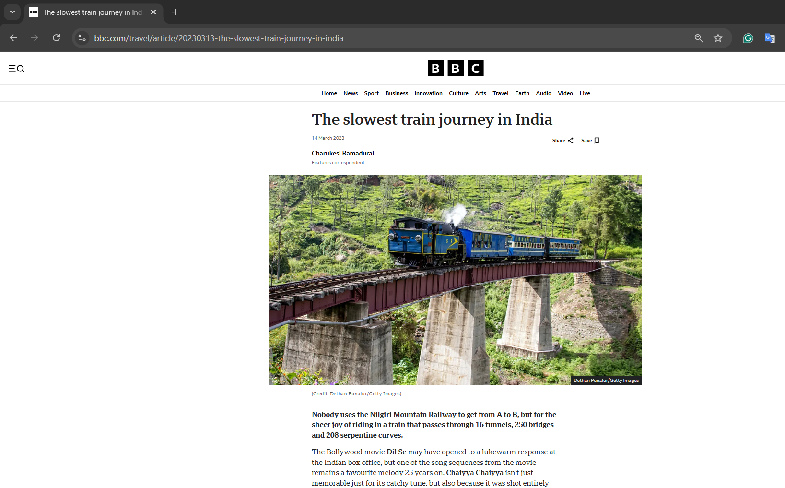
View full size ↗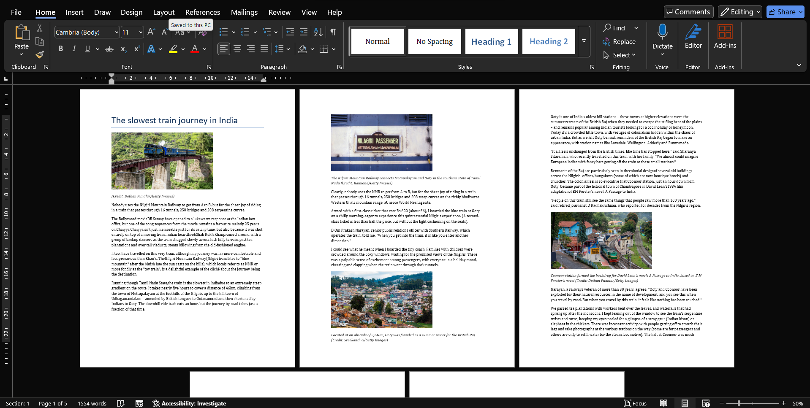
View full size ↗Code Snippet:
import requests
from bs4 import BeautifulSoup
from docx import Document
from docx.shared import Inches
from PIL import Image
from io import BytesIO
url = "https://www.bbc.com/travel/article/20230313-the-slowest-train-journey-in-india"
headers = {
"User-Agent": "Mozilla/5.0 (Windows NT 10.0; Win64; x64) AppleWebKit/537.36 (KHTML, like Gecko) Chrome/115.0.0.0 Safari/537.36"
}
response = requests.get(url, headers=headers)
soup = BeautifulSoup(response.text, "html.parser")
doc = Document()
article = soup.find("article")
if not article:
print("Cannot find article!")
exit()
title = article.find("h1")
if title:
doc.add_heading(title.get_text(strip=True), level=0)
# Description
desc = article.find("p", class_="ssrcss-1q0x1qg-Paragraph")
if desc:
doc.add_paragraph(desc.get_text(strip=True))
# Get content and images
for elem in article.find_all(["h2", "h3", "p", "figure"], recursive=True):
if elem.get("data-component") in ["tag-list-block", "advertisement-block"]:
break
if elem.name in ["h2", "h3"]:
text = elem.get_text(strip=True)
if text:
doc.add_heading(text, level=2)
elif elem.name == "p":
text = elem.get_text(strip=True)
if text:
doc.add_paragraph(text)
elif elem.name == "figure":
img_tag = elem.find("img", {"srcset": True})
if img_tag:
srcset = img_tag["srcset"]
img_url = srcset.split(",")[-1].strip().split(" ")[0]
print("Ảnh gốc:", img_url)
# Download image
img_res = requests.get(img_url)
image = Image.open(BytesIO(img_res.content))
# Convert to JPEG for Word
img_io = BytesIO()
image.convert("RGB").save(img_io, format="JPEG")
img_io.seek(0)
# Insert image into Word
doc.add_picture(img_io, width=Inches(4))
caption = elem.find("figcaption")
if caption:
para = doc.add_paragraph(caption.get_text(strip=True))
if para.runs:
para.runs[0].italic = True
# Save Word file
doc.save("bbc_article.docx")
print("Finished Saving")The following projects were delivered to paying clients via Fiverr. Screenshots and raw data are withheld to respect client confidentiality and source-site terms of service. Project scope, technical approach, and key metrics are shared for portfolio purposes.
ACECQA Government Register Scraper
Extracted the complete national register of childcare services from the Australian government's ACECQA portal (acecqa.gov.au). The target site deployed Cloudflare bot-protection to obscure contact information, requiring a session-warm-up and header-spoofing strategy to decode emails server-side before export.
Deliverables:
- Cleaned XLSX — Name, Address, State, Phone, Email for every listed service.
- Master XLSX — All original government fields (Ratings, Approval Dates, etc.) merged with the scraped emails.
Key challenges:
- Cloudflare email obfuscation — decoded client-side encoded addresses by replicating the CF decoding algorithm in Python.
- Verified that blank phone/state fields are genuinely absent on the source, not scraping gaps.
- Delivered both a minimal "requested columns" file and a full master dataset for future reference.
# No code found
MyFXBook Trading History Extractor
Built a Playwright automation script to extract the complete historical trade log from a public MyFXBook account profile (myfxbook.com/members/RockwellFX/ophir/11951077). The page renders trade data dynamically and serves interstitial ad pop-ups that block the automation flow.
Deliverables:
- Single deduplicated CSV of all ~236 pages of trade history.
- Pre-formatted columns matching a client-approved sample: ISO dates, raw seconds for duration, numeric prices and gain.
- Playwright
.pysource script delivered as-is.
Key challenges:
- Pop-up ad overlay on load — script includes a 15-second manual intervention window; bot auto-resumes after the user dismisses the ad and clicks the History tab.
- Deduplication across paginated results where page boundaries occasionally repeated the last row of the previous page.
# No code found
OmanBayt Real Estate Data Migration Bot
Designed and delivered a complete 3-stage data migration pipeline to move "Top Projects" listings from OmanReal into a Laravel-based admin panel at OmanBayt. The pipeline covered API extraction, field mapping transformation, and fully automated browser-based data entry with media upload.
Deliverables:
- Data Extractor — Python scraper using API interception and session warm-up to pull project details, units, amenities, and image links from OmanReal's internal JSON APIs.
- Visual Automation Uploader — Playwright bot that logs into
admin.omanbayt.com, fills the "Add Property" form, uploads images, and injects Payment Plans dynamically into the Floor Plans section. - README Documentation — Step-by-step guides for both tools so the client's dev team can maintain and re-run independently.
Key challenges:
- WAF (Web Application Firewall) bypass on the target admin panel — solved with stealth Playwright headers and request fingerprint spoofing.
- 25 MB upload ceiling for media files — handled with pre-upload compression and chunked retry logic.
- Dynamic Payment Plan injection — scraped plan data was serialized and injected directly into the Floor Plans section via DOM manipulation, as no dedicated UI field existed.
# No code found
Cambodia Expats Online — Full Forum Extraction
Performed a complete historical extraction of cambodiaexpatsonline.com — one of the largest expat forums in Southeast Asia — for a client market research project. The crawl was deliberately run in "low-and-slow" mode over 14 days to stay under the site's admin monitoring thresholds and avoid IP bans.
Deliverables:
- 621,235 posts organized into 21 category-specific CSV folders covering all publicly accessible content.
- Each row: Topic Title, Post Content, Comments, Date.
- ~35,000 posts and ~8,500 topics in private/premium categories (VIP Nightlife, Darknet Cambodia News) were documented as out-of-scope with a clear explanation for the client.
Key challenges:
- Custom proxy-rotation architecture with randomized delays to bypass server-side admin monitoring.
- Maintaining session continuity across a 14-day crawl window with automatic resume-on-failure checkpointing.
- Category-level folder organization for 21 distinct sections with consistent CSV schema.
# No code found
TripAdvisor · SkyscraperCity · FazWaz
A three-target research dataset project for a Southeast Asia market analysis client. Each site presented distinct technical challenges requiring a separate scraping strategy.
TripAdvisor Cambodia Forum — 32,062 topics extracted via deep pagination bypass. TripAdvisor applies aggressive bot detection on high page-depth navigation; solved by spoofing browser fingerprints with Playwright and inserting realistic scroll/interaction delays.
SkyscraperCity Cambodia Threads — 695 main topics with full nested parent-child thread structure captured using post_id / parent_post_id mapping. Delivered as a single CSV where indentation level is encoded numerically rather than visually.
FazWaz Real Estate — 181,408 listings (114,165 Sale + 67,243 Rent) scraped across all Cambodia property types. Multi-currency normalization required: server-side forced-USD cookies were overridden by the API for some locales, so exchange-rate conversion (1 USD ≈ 26,300 VND) was applied at the transform stage. Null bedroom/bathroom values for non-residential listings (land, factories) were preserved and documented.
# No code found